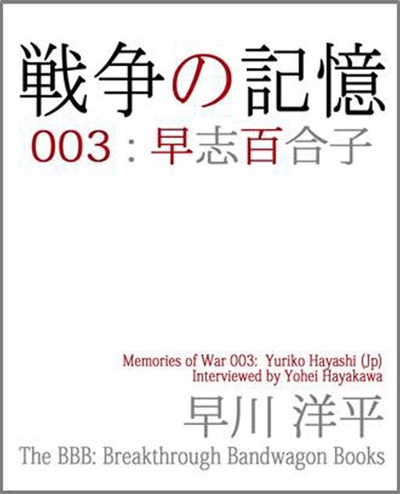
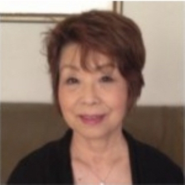

| 戦争の記憶 003: 早志百合子 (The BBB: Breakthrough Bandwagon Books) | |
| 早川洋平 | |
| The BBB: Breakthrough Bandwagon Books (2016) | |
Memories of War 003 : Yuriko Hayashi ( Jp )

（邦題 : 『戦争の記憶 003 : 早志百合子 』）
Originally told in Japanese by Yuriko Hayashi
Interviewed by Yohei Hayakawa
Summarized by Akiko Ogawa
Translated by Yoshino Wakamatsu
Cover design by Tanya
Copyright © 2016 Kiqtas / The BBB : Breakthrough Bandwagon Books
All rights reserved.
ISBN: 978-1-365-15575-8
このプロジェクトについて
──「戦争の記憶」は、戦争体験者の 肉声を残すプロジェクトです。特定の団体を支持・支援したり、思想を 煽動したりするものではありません──
また、インタビュー聴取に際しては、以下ご了承のうえお聴き下さい。
・インタビューの内容は、体験者の方個人の考え方や意見をそのままにしてあります。また、現在では適切ではないとされる表現が含まれている場合がありますが、修正せずにそのままにしてあります。
・インタビューは、体験者の方が取材 時点での知識と記憶に基づいて語っていることを収録したものです。 そのため、記憶違いやあいまいな点が含まれている場合があります。

毎年 「終戦の日」前に集中する報道を見て、『火垂るの墓』を見て、「 戦争は惨い、二度と起こしてはいけない」と心に決めつつも 8 月 16 日からはまた忙しい日常。
そんな繰り返しだったけれど、終戦 68 年の 2013 年。 節目の年ではないのに、『風立ちぬ』『終戦のエンペラー』『永遠の 0 』と 戦争をテーマにした映画の公開がなぜか多いと感じるのは僕だけでしょうか。
インタビュアーとして、世界で初めて原爆が投下された広島に住む者として、 このテーマと向き合わなければならない。ずっと心のどこかで思っていました。けれど、重い腰があがらない......。
そんな中で複数の方から今夏、こう言われました。
「インタビュアーなら、戦争体験者のインタビューをしてほしい。 ポッドキャストなら肉声を 50 年後も 100 年後も残すことができるのでは？」
終戦から 70 年近く経ち、戦争体験を語れる方は年々少なくなってきています。だからこそ、彼ら彼女らの思いを「肉声のまま」伝えなければならない。一刻も早く。
「戦争の記憶」はラジオ番組ではありませんし、特定の思想へ煽動 するものでもありません。ただ、戦争の時代を生きた方々の肉声を、ポッドキャストというしくみを借りて、 大切 に残していきたい。今を生きるすべての世代の人へ。国内外の人へ。 これから地球に生まれ続けてくるまだ見ぬ僕らの子孫へ。
平和とは何かを考える、そんなきっかけとなれば幸いです。
2013 年 10 月 1 日 早川洋平 （プロインタビュアー／メディアジャーナリスト）
早志百合子さんについて
どう生き、どう考えるか。
『原爆の子』のその後

はやし・ゆりこ ／ 19 36 年 広島生まれ。
|
『原爆の子』きょう竹会会長 2013 年に『 「原爆の子」その後 』を出版する |
早志百合子さんは、世界中で読まれる『原爆の子』執筆者の一人だ。『原爆の子』は子供たちの原爆の体験談を 105 ほど集め、故・長田新（広島大名誉教授）が編集・出版したもの。被爆当時 9 歳だった早志さんは、終戦後もさまざまな辛い目に 遭い、その記憶を掘り起こしながら作文にするのは苦痛だったという 。 しかし、出版から 62 年が経った 2013 年、早志さん自ら『原爆の子』執筆者のうち 37 人の手記を集めた『「原爆の子」その後』を出版するにいたった。 「戦後のほうが大変だった」と語る早志さんが、伝えたい想いとは。
死と常に隣り合わせだった 9 歳の頃
── 1945 年 8 月 6 日はどこで何をされていましたか。
当時私は 9 歳で、国民学校 3 年生でした。爆心地から 1.6 キロの土手町（現在の比治山町）で両親と 2 歳の弟と一緒に住んでいました。
── 8 時 15 分は、もう学校に出かける時間でしょうか。
父も私も本来は家を出ている時間だったのですが、何故かその日はたまたま全員が家の中にいました。いつも通りの生活をしていたら、家族の誰かは亡くなっていたと思います。 家の中にいたとは言っても、一瞬のうちに何十メートルも飛ばされましたよ。真っ暗になってから、次第に明るくなってきたときには、自分がどこにいるのかわかりませんでした。
直前に何をしていたかと言うと、玄関先で母が私の洋服のボタンをつけてくれていたんです。父は会社に行くため、家を出ようと靴を履いているところでした。屋内にいても光は感じましたね。ピカーッと光って数秒たってからドーンという音が聞こえました。そして真っ暗になりました。熱いも痛いもわかりませんでした。一瞬の静寂ののちは、阿鼻叫喚です。昨日のことのようにはっきりと覚えていますね。
── 真っ暗になった瞬間というのは、記憶を失ったわけではないのですか。
ええ、そういうわけではなく真っ暗になったんです 。 当時の住宅はほとんど が木造でしたから、爆風でぺたんこになったあとは、火がつきました 。 それまでは、Ｂ 29 が来て空襲警報・警戒警報が鳴り、近くの防空壕へ避難するというのが日常でした。そのときは警報が解除されており、安心して家にいたので被害が大きくなったという面もあったでしょうね。とにかく、私たちが知っている爆弾とは違ったのです。
── 空襲警報が鳴って防空壕へ逃げるのが「日常」だったわけですが、当時 9 歳だった早志さんはどのような意識でしたか。いつ死ぬかわからないと思っていたのでしょうか。
いつ攻めて来るかわかりませんからね。当時、小学校 3 年生から集団疎開が義務付けられていました。私も本来なら疎開をしていたはずなんですが、体が弱かったので家にいたんです。それで被爆してしまった。同級生は田舎に疎開していたので、直接被爆した人はほとんどいません。 私はどうせ長く生きられる体ではないので、爆弾が落ちたとしても両親と一日でも長く一緒にいられるほうがいいと思っていました。それを学校の先生や親に言って、広島に残ることになったんです。 死は当たり前に身近にあるものでしたね。
── 夜も安心して眠ることなんてできませんね。
もちろんです。いつでも逃げられるように、枕元に防空頭巾や持って逃げるものを置いていました。
原爆とその後の生活
── 原爆が落ちたときは、かなり飛ばされていたのですか。
はい。弟は箪笥か何かの下敷きになっていました。父が一生懸命引き出しました。母はガラスの破片が何十カ所も刺さっていて、血だるまのようになっていました。吹き飛ばされるときに、ガラスの戸や窓を突き破っていましたので。 でも当時は怪我している人だらけでしたから、気にしませんでした。母はその後何十年もガラスの破片が体に残ったままで、ときどきチクチクと痛んだようです。
地獄のような様相の中、私たちは比治山のほうへ逃げました。翌日、比治山の向こう側へ下りて行きました。 その間、数えきれないくらいの死体を見ました。ちょっと口にできないような感じです。でも、なんだか麻痺してしまって、怖いとか気持ち悪いとか思いませんでしたね。火の中を裸足で歩いて行ったはずなのに、熱いとも感じませんでした。夏の暑さと放射能や熱線、爆発で舞い上がり、火のついた家具類が上から降ってくる中です。よく逃げられたなと思います。逃げながら、父は防火用水の腐ったような水を周囲の人にあげたりしていましたね。
歩いている時間は長く感じました。この間取材があって同じ場所を歩きましたが、実際は近いんです。でも、そのときは何時間もかかりました。死体を踏んで歩かなければなりませんでしたからね。ズルっと皮がむける感じがしたり ...... 。でも考えている余裕はありませんでした。限界を超えているので、神様が感覚を失くしてくれているんじゃないでしょうか。 比治山の防空壕に行ったのですが、すでにいっぱいで入れませんでした。暑さと死体が焼けるにおい、うめき声で大変でした。
── その後 10 日ほどで終戦を迎えるわけですが、その間はどうやって過ごされたのですか。
焼けていないほうへ逃げたわけですが、家も食べ物も着る物も、何もありません。土手で野宿していました。 逃げる途中に、三星製菓というお菓子の製造工場がありました。父が少し関係していたので、その工場で燃えたカンパンを拾ってきて食べました。それから、線路に貨車が倒れていて、火のついた米がばらまかれていたんです。その米を拾ってきて食いつなぎましたね。あとは草です。
それが 10 日くらいだったのか 1 か月だったのか、覚えていないです。体が焼けただれ、両親に死なれた子どもが泣きながら近くを通ることもよくありました。誰が誰かわかりませんが、たくさんそういう子がいたんですね。呼び止めては食べ物を与えたりしていました。
── その頃に感じていたことは、どのようなことでしたか。
今考えると原爆症なのだと思うのですが、私は寝たきりになってしまったんです。吐くものもないのに、吐き気が止まらず、血を吐いていました。食べる物があっても食べる気はしませんでした。私は絶対死ぬと思っていましたし、周りもそう思っていたでしょう。何か月もそういう状況でしたから、終戦とかいう話ではありませんでした。
母は私に草を煎じたようなものを飲ませていました。とても飲めたような代物ではありませんでしたが、今考えれば効果があったのでしょう。 その後、小学校は残り 3 年間あったはずですが、ほとんど記憶がないです。写真もありません。担任の先生はどんな人だったのか、クラスメイトは誰だったのか、どうしても思い出せないんです。被爆後数年間がすっぽり抜けているような感じです。
中学 2 年生のときに、『原爆の子』（長田新・広島大名誉教授が、広島で被爆した子どもの手記から 105 編を選び、 1951 年に出版）という本が出て、私も書いているんですが、その頃からようやく自分を取り戻した気がします。 これは先生に言われて、本当は書きたくなかったけれど当時のことを思い出しながら書きました。疎開している子が多かったから、直接被爆したのはクラスに 2 人しかいなかったんです。
── やはり、書きたくないという気持ちだったのですか。
当時のことを忘れたことはありませんが、忘れようとしていました。原爆が落ちた日だけではなく、その後にいろいろ嫌なことがありましたから、思い出すのは辛くて、書くのに時間がかかりましたね。 ただ、あの体験は書き残したほうがいいのだろうという思いも半分ありました。自分のためにも。これが本になったことを知ったのは、出版された翌年の 2 月です。本におさめられた手記を書いた 105 人が集められ、長田先生から 1 冊ずつ手渡されたのです。そのとき 、「 ああ、書いてよかったんだな」と思いました。その頃から学校でも自分らしく振る舞えるようになってきました。
戦争が終わってからのほうが大変だった
── 早志さんが取材されている記事をいくつか読んだのですが、「戦争が終わってからのほうが大変だった」とおっしゃっていたのが印象的でした。どのようなことが大変だったか聞かせてもらえますか。
もちろん原爆が投下されたこと自体不幸であり、大変な体験でした。でも、その後の数年間は言葉で言い表せないくらいです。衣食住すべて足りず、精神的にも非常に屈辱的な思いをしました。 母も原爆症でボロボロになり、治療してくれるところがあると聞いて長いこと並んでも、アカチンを塗るだけ。治るわけないですよね。なんでこんな思いをするんだろう、と思いました。
原爆が落ちるまでは、私の家はわりと裕福だったんです。それが、周りの人からの扱いや私を見る目というものが手のひらを返したように変わりました。学校でも、先生や同級生からひどい扱いを受けました。悔しいやら悲しいやら ... 。 『原爆の子』を書いた人たちが年に 1 回くらい集まるのですが、やはり皆さん同じことをおっしゃいます。ああいう体験があったから、いま普通に食事ができて家があって、穏やかに暮らせることが幸せだと。世の中いろいろなことがありますが、戦争を体験していない人に、こういった話をぜひ聞いてもらいたいといつも思います。
── 辛かったときに、支えになったものはありますか。
私の場合は、両親がとても愛情深い人でした。使用人の中に朝鮮人もいましたが、父は一切差別をしませんでした。当時では珍しいことなんです。使用人も近所のおじさんおばさんも連れて逃げましたし、本当に分け隔てなく人に接する人でした。だから私は絶望することなく生きられたのではないかと思います。 物質的にはどん底でしたが、いろいろな人が父を慕って来てくれたし、支えてくれる人もたくさんいました。 両親はとにかく人の悪口を言うことがなく、自分たちが食べる分もないのに、誰かが「恵んでくれ」と来たら、あるもの全部渡してしまうんです。それが自然なんですね。大変な状況にあっても、人を憎むことはありませんでした。
ABCC からの協力要請
── 原爆症というお話もありましたが、体の面で言うと、どのような大変さがあったか教えてもらえますか。
放射能の怖さは何年か経ってわかりました。母は甲状腺がんになりました。私は乳がんになって、右の乳房は全摘しました。当時は放射能という言葉を知らなくて、ガスと言っていましたね。ガスを吸うと、吐いたりお腹がパンパンになったりするんだと思っていました。川いっぱいに死体が浮かんでいるのを見ましたが、みんなお腹がパンパンでした。ガスを吸ったから、ああいうふうになるんだと思いました。それは原爆の直接の被害ですよね。
戦後 6~7 年経って比治山の上に ABCC （ Atomic Bomb Casualty Commission 、原爆傷害調査委員会 被爆者の調査研究のためにアメリカが設置した機関であり、治療にあたることはない）の施設が出来ました。出来てすぐに連れていかれ、屈辱的な検査を受けました。人間扱いではなかったですね。アメリカ人医師、日本人医師、それから若い研修医のような人たちがたくさんいる前で、裸にうすい布をまとったくらいの状態で立たされ、四方八方から見られ、検査されました。 この経験をもとにした演劇『原爆の子』の中に「モルモットだよね」というセリフがありますが、まさにその通りです。血もたくさん抜かれました。 何年か行きましたけど、高校生くらいのとき、どうしても恥ずかしくて嫌だから逃げまわって行かなくなりました。でも今また行っています。どうしても来てくれと言うので。向こうとしては、 1 人の人をずっと検査しないとデータが出ないということでしょう。
── 昔の扱いとはさすがに違いますよね。
まったく違います。当時は人間として見ていなかったと思いますよ。自分たちが落とした原爆が人体にどのような影響を与えるのかを調査しているだけですから。その後、 1975 年に日本と共同運営することになってからは変わりました。女性の医師が対応してくれて、タクシーで送り迎えもあったりして。まぁ、これなら行ってもいいか、何かの役に立つのならと思っています。
── 正直なところ、自分だったら検査に協力できるかどうか ...... 。 早志さんはどのような想いなのでしょうか。
『原爆の子』執筆者を集めて「きょう竹会」という会を作り、その会長を何十年かやらせてもらっています。毎年みんなで集まる中で、いろいろなお話を聞きます。身内にも配偶者にも話せないことを、ここに来たら本音で話せるんです。同じ痛みを持つ仲間だから、ほっとできる部分があるんですね。そういった話を聞くと、ああ、私の役割はこれなんだなと思います。
私の体験は不幸なことですが、事実です。それをある程度伝えていくためには、「こんなに辛かった」と言うだけではダメだと思います。そのあとどうなったかを含めて伝えていくことが必要なのだと思っています。 残った者の責任、使命と言うんでしょうかね。何も言えずに、何もわからずに死んだ人が 14 ～ 15 万人いるわけでしょう。私は生死の境をさまよったけれど、生き延びましたから。 この手記（『「原爆の子」その後』は早志さんが『原爆の子』執筆者に声をかけて 37 人の手記を集め、出版した）を集めたときもそう思ったんですよ。
『原爆の子』は世界中で翻訳され、読まれています。この本を読んだ人は、「辛い体験をした人たちは、その後はどうしているんだろう」と思うのではないかと思いました。その後どう生きたか、どう考えているか。 最初は映像を撮ったんですが、映像だと構えてしまうところがあって、なかなか本音が出てきません。それでアンケートのようなものを作って書いて答えてもらいましたが、それだと心がこもらない。そんな紆余曲折を経てできたのが『 「 原爆の子 」その後 』です。 10 年くらいかかってしまいました。
── お一人お一人は違う体験をしていらっしゃると思いますが、共通の想いなどはありますか。
あれだけ辛い体験をしたからこそ、今の普通の生活がありがたくて幸せだということです。
『原爆の子』『はだしのゲン』、伝えたい想い
── 『「原爆の子」その後』について少し詳しく教えていただけますか。
『原爆の子』執筆者 105 人のうちの 37 人の手記をまとめた本です。 2013 年の 7 月に出たばかりですが、『原爆の子』と同じように世界中で読んでもらいたいと思っています。今の私の仕事は、この本を一人でも多くの人に読んでもらうことですね。
── 今感じていることと当時とはまた違うと思いますが、たとえばアメリカ、軍部、天皇に対して早志さんは当時はどのような感情を抱いていましたか。
まだ子供でしたし、戦争がいいとか悪いとか考えていたわけではありません。 ただやはり、母も原爆症になって、原爆が憎い、アメリカが憎いと思っていた時期はありました。いつの頃からか ...... 、アメリカ人を知ったときには、一人ひとりはいい人で、好きなんですよね。でも、どうして戦争なんていうことになってしまうのか。何がどこで狂ってしまうのか。考えました。人間が人間を殺すという「戦争」は絶対いけないですね。やるほうもやられるほうも不幸です。現在でも、やったことを消したいから、「ああいう事件はなかった」と言おうとしていたりするじゃないですか。
『はだしのゲン』（中沢啓治による被爆経験を元にした自伝的漫画）は、表現の残酷さや歴史上の認識についていろいろ言われましたよね。でも、私は中沢さんをよく知っていますが、純粋でとてもシンプルに考える方です。小理屈をこねるのではなくて。 戦争は人を鬼や悪魔にさせてしまう。平気で人を殺し、それに喜びを感じてしまうというのが戦争の怖さだし、それを描きたかったんです。 遺体に蛆がわいている描写が残酷だと言われたようですが、本当は生身に蛆がわきましたからね。私の母も傷口に蛆がわいて、取っても取ってもわいてくるんです。信じられないでしょう？ 本当はもっと、内蔵が飛び出たり、目が飛び出たり ... 、とてもじゃないけど言えない。 「あれでも加減して書いたんじゃ」とおっしゃっていました。
言葉や手段は人によって違いますが、伝えたいのは、「こんなに辛い想いを今後誰にもしてほしくない」ということなんですよ。
言葉で伝えても、その自分の言葉がずっと頭の中に響くものです。私は体験談を話すと、その後 2 ～ 3 日病気になります。話したら終わり、ではないんです。話す準備をしている間もすごく辛いです。辛い経験を引っ張り出す作業をしているわけですから。倒れたことも何回もあります。
── 今の日本について、早志さんはどう感じていらっしゃいますか。
危なさを感じますね。戦前、私は 5 ～ 6 歳だったのであまり覚えてはいませんが、あの頃と似た空気を持っているのではないでしょうか。集団的自衛権もそうだし、憲法改正の話も ...... 。 核は現に存在していますから、それを失くすには費用もかかるし危険もあるのでしょうが、ないものにしていかないと。「核には核を」ということではないと思います。
今年（ 2013 年）は戦後 68 年で、区切りでも何でもないのですが、経験者たちもあと 10 年くらいでいなくなってしまうかもしれない。だから、早くしないと、という焦りはみんな感じているかもしれないですね。本能的な危機感を感じているのではないでしょうか。
── 最後に、これをお聴きの方にメッセージをいただけますか。
人間同士が殺し合うような戦争なんて、絶対にない世の中するという目的を持って生きてもらいたいです。 人間はどんな人でもいつか死にます。それをあえて不本意に殺したり殺されたりすることはありません。戦争は欲、エゴ、小心から出ているものです。 （了）
***
Listen to this interview on Podcast
https://itunes.apple.com/jp/podcast/zhan-zhengno-ji-yi-memories/id718023220?mt=2
Listen to this interview on you r PC
http://podcast5.kiqtas.jp/memories/archives/2013/10/3memories3-yuriko-hayashi.html
Visit the website of Memories of War